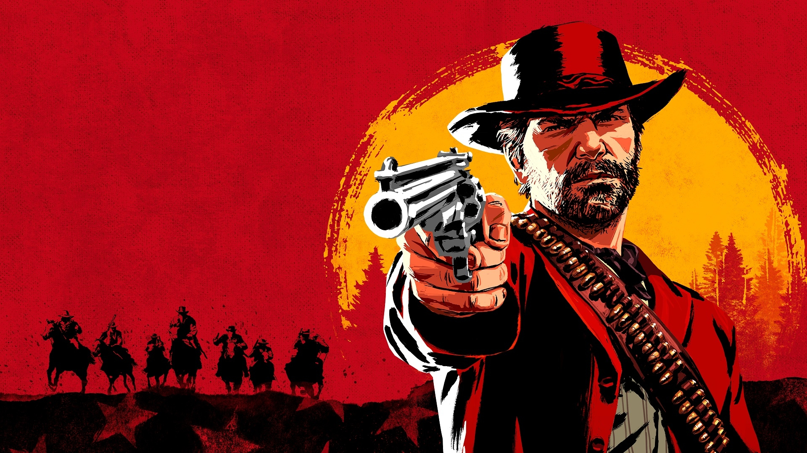
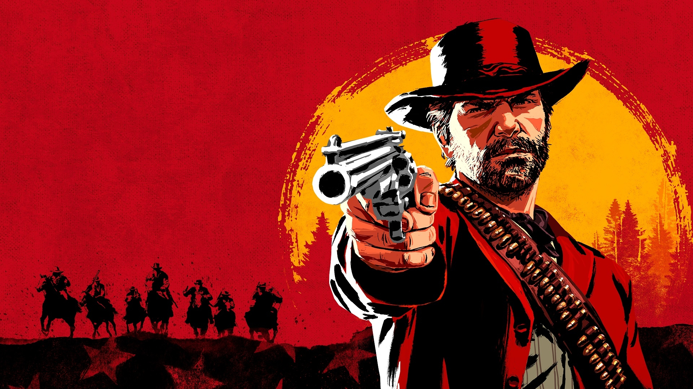

Rockstar nos presenta su juego más ambicioso hasta la fecha, Red Dead Redemption 2, una precuela de la anterior entrega, cuya historia transcurre doce años antes. Controlas a Arthur Morgan, un forajido de la banda de Dutch Van der Linde, a la que también pertenece John Marston, el protagonista del anterior juego.
Estamos un juego enorme y lleno posibilidades, con centenares de misiones, secretos y coleccionables, y en esta completa guía te va a explicar todo lo que debes saber para dominarlo y conseguir el 100% y descubrir todo lo que contiene, que es mucho.

Hay 90 desafíos de caza, exploración, montar a caballo, recolección de hierbas, de tiroteos e incluso minijuegos, y cada vez que realizamos uno de ellos desbloqueamos equipo especial en el trampero.
Podemos cazar y pescar más de 200 animales en Red Dead Redemption 2, pero hay algunos animales legendarios, criaturas con características especiales que si cazamos nos dan materiales únicos, con los que podemos crear trajes especiales y talismanes exóticos.


Estamos un juego enorme y lleno posibilidades, con centenares de misiones, secretos y coleccionables, y en esta completa guía te va a explicar todo lo que debes saber para dominarlo y conseguir el 100% y descubrir todo lo que contiene, que es mucho.

Historia y 100%
La historia principal de Red Dead Redemption 2 está compuesta por más de 100 misiones, que podemos completar en bronce, plata u oro dependiendo de la cantidad de objetivos que consigas en cada una de ellas. Te contamos cómo completar las misiones y los objetivos que tienes que completar en cada una para conseguir el oro. También hay una serie de misiones, desafíos y actividades que debes realizar para alcanzar el 100% del progreso, te explico cómo conseguirlo.Consejos y aspectos básicos antes de jugar
- Bienvenidos a un western - Red Dead Redemption 2, a diferencia de otros títulos de Rockstar más alocados y frenéticos como los GTA, es una aventura más pausada y lenta, que invita a explorar y contemplar sus escenarios, dedicar tiempo a cazar y pescar, buscar secretos y curiosos personajes en su amplio mundo, con continuos desplazamientos a caballo. Esto también se refleja en las acciones del personaje, un tipo corpulento y de animaciones lentas, y que tiene una relación muy física con el escenario. Además es una aventura muy larga, por lo que nuestra primera recomendación es que lo juegues sin prisas, y disfrutes de todo lo que tiene que ofrecerte, que es mucho.
- Ajusta los tiroteos a tu gusto - En el menú de pausa, en Ajustes y Controles, podemos ajustar multitud de opciones relacionadas con el apuntado. Esto es algo importante, ya que vas a pasar horas disparando, y dependiendo de cómo ajustes estas opciones puedes tener una experiencia más o menos exigente, que se ajusta a cada tipo de jugador. Eso sí, aunque pongas lo tiroteos a pie en apuntado manual o con muy poca asistencia, te recomendamos que a caballo si uses puntería asistida, ya que es bastante difícil acertar a un blanco en estas circunstancias.
- Entiende el significado de los núcleos - El sistema de salud, resistencia y Dead Eye es un tanto peculiar, y si no lo entiendes y asimilas bien al principio te puede traer algunos problemas. Realmente es muy sencillo; el exterior de los núcleos indica la salud o resistencia que tienes disponibles, y el interior la velocidad a la que estos parámetros se van a regenerar. Tienes que consumir alimentos, bebidas o elixires para recuperarlos, o incluso dormir para recuperarte del cansancio.
- Lleva siempre contigo reanimador para caballo - Los caballos son muy importantes, y con el paso de las horas vas creando un vínculo con ellos que desbloquea nuevos movimientos y hace que tu caballo sea cada vez mejor. En cualquier momento, con un accidente tan simple como tropezarte con una piedra y caer por una ladera, tu caballo puede quedar malherido y morir para siempre. Para evitar esto, lleva siempre contigo un reanimador para caballo, un objeto que se puede comprar en cualquier tienda y que te puede servir para salvar a tu caballo si este queda malherido. Si tienes un grave accidente y no tienes este objeto morirá, así que no te olvides de llevar siempre uno contigo.
- Dialoga con los compañeros de la banda - sumérgete en la narrativa - La historia del juego no solo se nos cuenta a través de las cinemáticas o los diálogos de las misiones principales, y hay otros muchos momentos en los que podemos recibir información crucial para entender tanto el mundo de Red Dead Redemption 2 como sus personajes. Compra y lee los periódicos, lee habitualmente el diario de Arthur Morgan, y no desaproveches la ocasión de tener una conversación con un compañero de la banda o escuchar qué están hablando, ya que en estos momentos aparentemente poco importantes encontramos algunas de las conversaciones más emotivas del juego.

Desafíos
Hay 90 desafíos de caza, exploración, montar a caballo, recolección de hierbas, de tiroteos e incluso minijuegos, y cada vez que realizamos uno de ellos desbloqueamos equipo especial en el trampero.
Animales legendarios
Podemos cazar y pescar más de 200 animales en Red Dead Redemption 2, pero hay algunos animales legendarios, criaturas con características especiales que si cazamos nos dan materiales únicos, con los que podemos crear trajes especiales y talismanes exóticos.
Caza, pesca y minijuegos
- CAZA
- PESCA
- POKER
- BLACKJACK